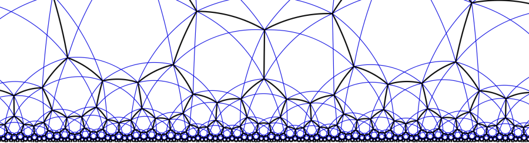

UC Berkeley Summer 2018

Home | FAQ/Contact Info | Research Groups | Apply
A: No! Any undergraduate who is a US citizen or permanent resident can apply for the program.
Q: I'm graduating this year! Can I still apply?
A: Graduating seniors are welcome to apply.
Q: Do I need to have completed any specific coursework to apply?
A: Yes. See the project descriptions. Exceptions are possible for highly motivated students.
Q: I don't even know what differential geometry is or what low-dimensional topology is, and I don't understand the words in the course description. Can I still apply?
A: Yes! This is the point of the lectures. As long as you have the background specified in the project descriptions, you are welcome.
Q: How many hours of lecture will there be?
A: Between 20 and 30 across the 8 weeks.
Q: Can I join multiple research groups?
A: You may only join one research group, but we will try to integrate some of the lectures.
Q: How do I know which short course I'm taking?
A: You are asked to indicate a preference on your application, but we will let you know which one you are taking if you are accepted into the program.
Q: Are there any Berkeley faculty affiliated with the program?
A: The program is directed and run by graduate students. Your day to day interactions will be with them. Professors Ian Agol and Michael Hutchings will be loosely affiliated with the program. There may also be a couple of colloquium-style lectures given by faculty.
Q: May self-funded international students apply?
A: No. The program is only for US citizens and permanent residents.
Q: What is a typical day like?
A: You should expect to be on Berkeley's campus from around 10 to 4, Monday through Friday. Daily activities will consist of some of the following: lectures, problem sessions, supervised research sessions, colloquia, tea, and student presentations. You will meet with your research supervisor (Franco or Julian) every day. There will be no class on the weekends, but there will be occasional social group activities.
Q: It looks like the research groups will cover a lot of ground. Will I be able to keep up?
A: You should expect to work hard. But if you do fall behind, your program supervisor can help you catch up. There will be many aspects to each research project and your supervisor will help find something suitable for you to work on.
For additional questions, please contact the head organizers Julian Chaidez at jchaidez@math.berkeley.edu or Franco Vargas Pallete at franco@math.berkeley.edu.